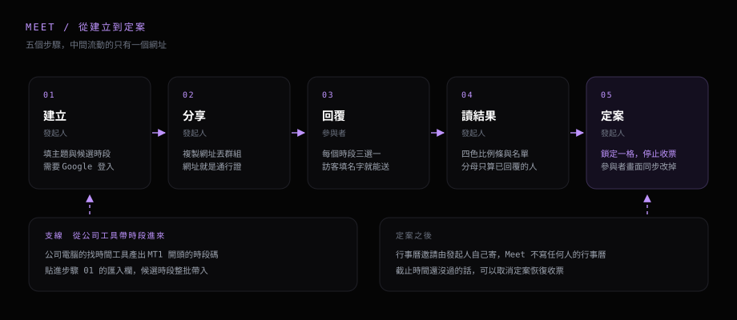

Meet 是這個站上的會議時段投票工具，跟 Google Meet 沒有關係。發起人建立一場會議、列出候選時段，拿到一個網址；收到網址的人對每個時段選「可參加」「需事先通知」「無法參加」；發起人回到同一頁看結果，挑一個時段定案。全程不需要在群組裡一個一個問。
本文依實際操作順序編排：建立會議的各欄位、參與者的回覆畫面、發起人的結果檢視與定案。工具本身在 這裡， 怎麼做出來的寫在 P31。

# 身分與權限
建立會議需要 Google 帳號。只是要回覆時段的人不用登入，用訪客身分就能投票。三種身分的權限對照如下。
| 項目 | 發起人 | Google 登入的參與者 | 訪客 |
|---|---|---|---|
| 建立會議 | 可以 | 可，建立後即為該場發起人 | 不可，訪客僅能投票 |
| 投票 | 不計入票數 | 可以 | 可，送出前須填名稱 |
| 提議新時段 | 可 | 發起人開啟開關後可 | 發起人開啟開關後可 |
| 檢視他人回覆 | 完整名單與票數 | 僅票數 | 僅票數 |
| 下次回訪 | 首頁列出建立過的會議 | 首頁的「我回過的會議」 | 同一裝置的同一瀏覽器保留 |
訪客身分記在那台裝置的瀏覽器裡。同一台裝置重新開啟還是同一個人，可以改先前的回覆；換裝置或換瀏覽器會被當成新的參與者，要重投一次。需要跨裝置改回覆就用 Google 登入。
# 發起人：開一場會議
在首頁按「開一場新的會議」展開表單，共十格。一定要填的有兩項：會議主題，以及至少一列候選時段。其他欄位都有預設值，可以直接跳過。


- 必填 會議主題 顯示在參與者畫面最上方，建議寫清楚討論範圍。（沒填就按建立會停在原地，表單下方顯示提示）
- 選填 發起人顯示名稱 參與者靠這個名稱認出發起人。預設帶入上次用過的名稱，上限 40 字。
- 四選一 會議時長 30 分鐘／60 分鐘／90 分鐘／半天（4 小時）。選好之後，每一列的結束時間自動換算。（先選時長再排時段；順序相反時，已經輸入的結束時間會被重新換算覆蓋）
- 選填 回覆截止時間 指定日期當天 23:59 停止收票，時間以建立會議時所在的時區為準。（過了截止時間，參與者畫面顯示「已經過了投票截止時間」，三顆按鈕停用）
-
預設
會議地點／連結 留空時自動填入
Microsoft Teams。約實體會議室就直接改掉。 - 選填 會議備註 顯示在參與者畫面的標題下方，用來補充討論範圍或時間限制，例如「這次只討論第二季預算，四十分鐘結束」。
- 僅發起人 發起人私人備註 僅發起人可見，參與者畫面不顯示。
- 選填 從公司工具匯入 貼入公司端產生的時段碼，整批帶入候選時段。（操作見〈從公司工具帶時段進來〉，該節末尾標示目前的驗收狀態）
- 預設開啟 允許參與者新增候選時段 開啟時，參與者可以提議新的時段；關閉後只能從既有時段裡選。
- 必填 候選時段 至少一列。表單展開時預設帶入明天的 10:00 與 14:00 兩列，按「新增候選時段」往下加。（上圖的三列是示範內容；輸入格式見下節）
時段欄位的輸入格式
日期與時間都是純文字欄位，可以整串輸入或貼上，不用先整理成固定格式。認得的寫法如下。
時間 9 → 09:00 930 → 09:30 1400 → 14:00 12. → 12:00
日期 0930 或 9/30 當今年，算出來已經過了就跳明年
20260930、2026-09-30、2026年9月30日、26/9/30 都認得另外有四項自動處理：
- 自動 全形轉半形 全形數字與全形冒號自動轉成半形。
-
顯示
日期欄顯示
MM/DD完整年月日顯示在同一列右側的小字。 - 鍵盤 整格選取 點進欄位後會整串選起來，直接輸入就是覆寫。左右鍵切換到相鄰欄位，整列可以只用鍵盤完成。
- 自動 新列沿用上一列 新增的一列沿用上一列的日期，開始時間接著上一列的結束時間。同一天排連續時段時不用修改。
從公司工具帶時段進來
已完成實測（2026-09-29）。時段碼的格式於 2026-09-24 談定，公司端與 Meet 端各自實作。2026-09-29 走完一輪：公司端當場產出一組四個時段的碼，貼進本頁表單按「匯入」，四列日期與起訖時間逐筆還原正確。
在公司電腦用 Outlook 比對完行事曆之後，找到的空檔可以整批帶進這張表單，省掉兩邊對照抄寫。操作五步：
-
公司端
在找時間工具的結果清單勾選要送出的時段，按「產生時段碼」，拿到一串
MT1.開頭的文字。 - 公司端 整串複製。（兩端沒有任何連線，剪貼簿是唯一的傳遞方式；複製不完整會驗證失敗）
- Meet 端 回到建立會議表單，貼入「從公司工具匯入」欄位。
- Meet 端 按「匯入」。候選時段整批換成碼裡的那幾列。（原本手動輸入的列會被覆蓋，要保留的話先另外記下來）
- Meet 端 帶進來的列跟手動輸入的列一樣，日期與時間都還可以改。
一組時段碼最多帶入 20 個時段，超出的部分不會帶進來。驗證失敗時，欄位下方會顯示原因：
- 開頭不是
MT1.（剪貼簿裡不是時段碼，複製到別的內容了） - 時段碼不完整或被改過（多半是複製時漏選一段，回公司端重新複製）
- 內容無法解析（時段碼毀損，回公司端重新產生）
- 碼中沒有時段（產碼時未勾選）
時段碼裡面只有時間本身。與會者、會議主旨、行事曆的忙閒明細都留在公司電腦，不會跟著時段碼出來。送上公開網站的資料只有幾組日期與時間。
建立完成後直接進到那場會議的網址。按右上角「複製分享網址」取得連結。
# 參與者：回覆一場會議
參與者對每個時段各點一次就完成，全程約三十秒。打開網址先進入入口畫面，上方是會議名稱與發起人，下方兩個選項：Google 登入，或用訪客身分投票。訪客不用註冊。


- 訪客 先填顯示名稱 沿用預設的「訪客 + 身分編號前四碼」送不出去，畫面提示「請先填你的名字，發起人才認得出是誰」。（Google 登入的人帶入帳號名稱，這一格可以不動）
- 所有人 每個時段三選一 可參加、需事先通知、無法參加。按鈕下方是目前票數，名單只有發起人看得到。
- 所有人 按「送出回覆」 可以只回覆部分時段，不必每一格都選；「您已回覆 N / M 個時段」只是提示。（送出後按鈕變成「更新我的回覆」，可以隨時改）
- 發起人開放時 提議新時段 時段列表下方有「新增時段」。提議出來的時段會標上提議者，提議的人可以自己刪掉。（發起人關閉「允許參與者新增候選時段」時不顯示）
- 按不下去時 三顆按鈕停用 截止時間已過、發起人已定案、或這場已經結束。畫面會寫出實際原因。
# 發起人：看結果、定案、收尾
發起人打開同一個網址時會多出「投票結果」一段，參與者畫面看不到。判讀重點是各時段綠色區塊的長度。

- 檢視 比例條 滑鼠移到色塊上會顯示名單，手機點一下色塊。色塊下方的數字是各狀態的人數。
-
檢視
右側的
2/3 可參加已回覆的三個人裡面有兩個可參加。分母只算已回覆的人數，看不出還有幾個人沒回。 - 檢視 「最多人可參加」標記 自動標在票數最高的那一格。（同票時，以「需事先通知」比較少的那一格優先）
- 操作 定案這個時段 按下後整場停止收票，參與者畫面顯示「發起人已定案，行事曆邀請將另行寄送」。（按「取消定案」可以恢復收票，前提是截止時間還沒過）
- 操作 移除參與者 名單每一列右側有移除鈕。移除後，那位參與者重新打開連結可以再投一次，前提是這場還在收票。
- 操作 刪除整場 在首頁那一列的垃圾桶，按下會先跳出確認。會議與所有回覆一起刪掉，並釋回一個名額。（無法復原；拿到連結的人打開後會看到「這場投票已經被移除」）
- 檢視 首頁的「目前預計」 顯示每一場目前票數最高的時段；定案之後改成顯示定案的那一格。
不需操作與需自行處理的項目
以下是常被問到的幾件事，先列出來。
- 不需 註冊帳號 投票端用訪客身分就能送出。只有建立新會議需要 Google 帳號。
- 不需 安裝程式 整套都是網頁，手機瀏覽器打開網址就能投票。
- 不需 等待全員回覆 票數的分母是已回覆人數，票數夠了就可以定案。
- 需自行處理 行事曆邀請 定案只是把結論標在頁面上，Meet 不會寫進任何人的行事曆。
- 需自行處理 通知與催覆 Meet 沒有受邀名單也沒有 email，發不出提醒。連結丟在哪個群組，催覆就回那個群組。
# 使用前須知的五項限制
- 同時最多 10 場。 開到第 11 場會被擋下來，刪掉已經結束的會議就會釋回名額。這個上限讓整套工具維持在免費額度內。
- 發起人不計入票數。 發起人列出的候選時段就代表他可以的時間，畫面上不含發起人的票。判讀比例條時要另外算進去。
- 看不到還有幾個人沒回。 Meet 不知道連結發給了誰，算不出還缺幾票。要催覆就對照參與者名單，那邊列得出已經回過的人。
- 名單只顯示名稱。 參與者紀錄裡沒有 email，顯示的是每個人自己填的名稱。發連結的時候可以順便要求填全名。
- 拿到網址就能投票，避免貼在公開的地方。 網址帶一組 20 字元的識別碼，不容易猜到，在群組裡流通夠安全。網址外流時的影響分兩層：隱私這一層守得住，投票內容與完整名單仍然只有發起人讀得到，每位參與者只能讀自己的那一票，這道限制在資料庫層成立，與畫面呈現無關；票數這一層會鬆掉，拿到網址的人都能投，統計的可信度因此受影響。
# 相關連結
使用上有問題或有功能建議，於 許願板 留言，或在 GitHub 開 issue。